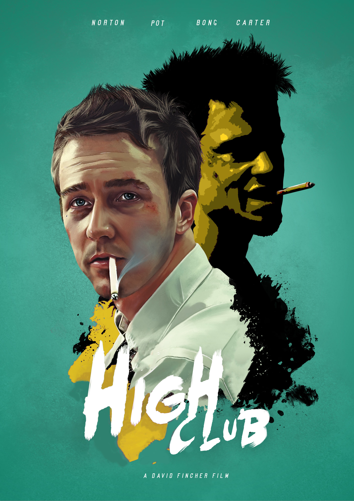
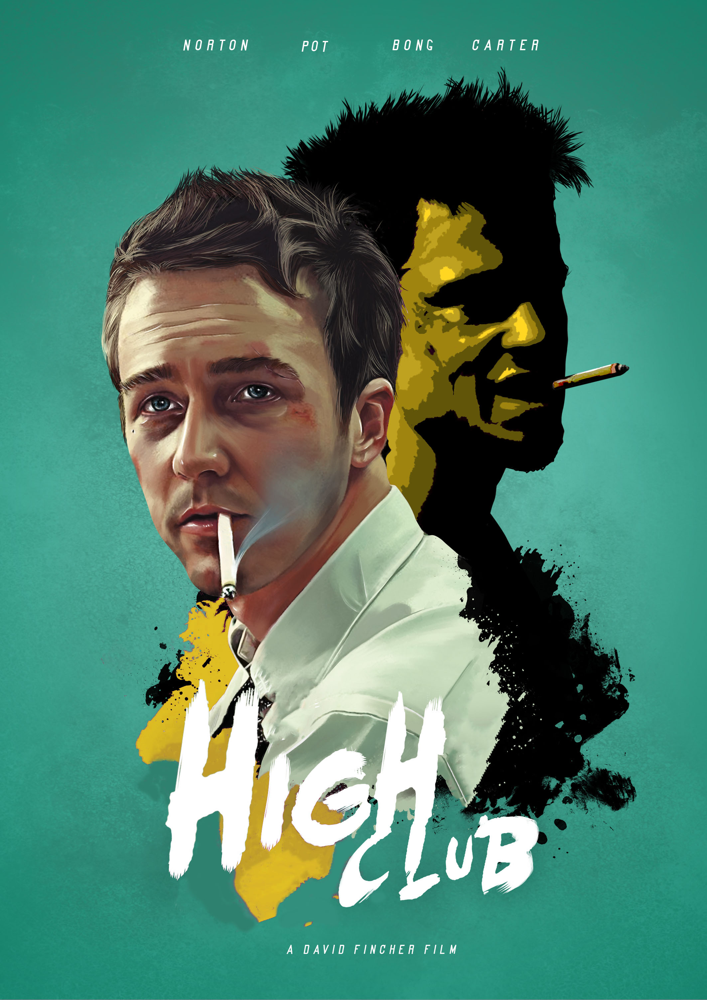

Work-in-Progress 2 Photoshop Revision
 


My partner and I originally decided to change the genre of Fight Club to a comedy. It was his idea to change it to "High Club" since the poster already featured Edward Norton with a cigarette in his mouth, and Brad Pitt with what appears to be a joint. First, we had to change the title by using the patch tool to fill in the background. Luckily, the poster was already done in a hand-painted style, so our blurred edges arent very noticable. The next step was to cut the existing H and paste a larger copy of it in front, where the F used to be.
Then, we simply colored in the orange mouth piece of Norton's cigarette to make the whole thing white using the paint brush. We then changed the purple color of Brad Pitt to a mustard-yellow. We thought that the green background and the mustard yellow tint would induce Jamaican vibes and maybe even a sickly feeling that is associated with being high. This was done by selecting the darkest shade of purple and using the paint bucket to fill it with a dark shade of yellow, then repeating that process for 2 more lighter shades of purple being changed to yellow. Because of this rookie process, Brad Pitt looks slightly pixelated.
Finally, we changed some of the actor's names along the top, for instance Pitt became Pot, and Bonham became Bong. This subtle change was simple and effectively translates the comedic genre to those who look closely enough to see it.
I was pretty satisfied with what we came up with in class, but during my revisions I wanted to go further with making Edward Norton appear high, so I gave him bloodshot eyes and bigger pupils, using a paintbrush with about 50% opacity. I also added some smoke to Brad Pitt's joint using the same brush, and cleaned up the pixelated look of the yellow paint, again using a brush with 50% opacity on the hard edges. Finally, I changed the shade of green in the background to a brighter green that was more similar to the Jamaican flag by applying a Hue/Saturation layer, selecting the green color, and changing its hue.
For some reason, I am having trouble centering the above 3 images, side by side. I plan to fix this in the immediate future.